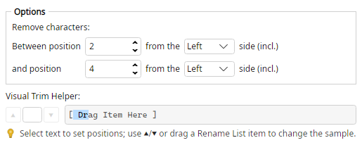

Magic File Renamer Help
Trim Between

Filter options (screenshot optional — capture to images/TrimBetween.png).
Deletes an inclusive range of character positions. Each end is a 1-based index counted from the Left or Right side of the string.
If the start lies after the end, the two positions are swapped before removal.
Options
- Remove characters: Between position … from the … side (incl.) — First endpoint (Left = from start, Right = from end).
- and position … from the … side (incl.) — Second endpoint.
Examples
Portishead - Glory Box >>> Portishead - Box
abcd >>> a